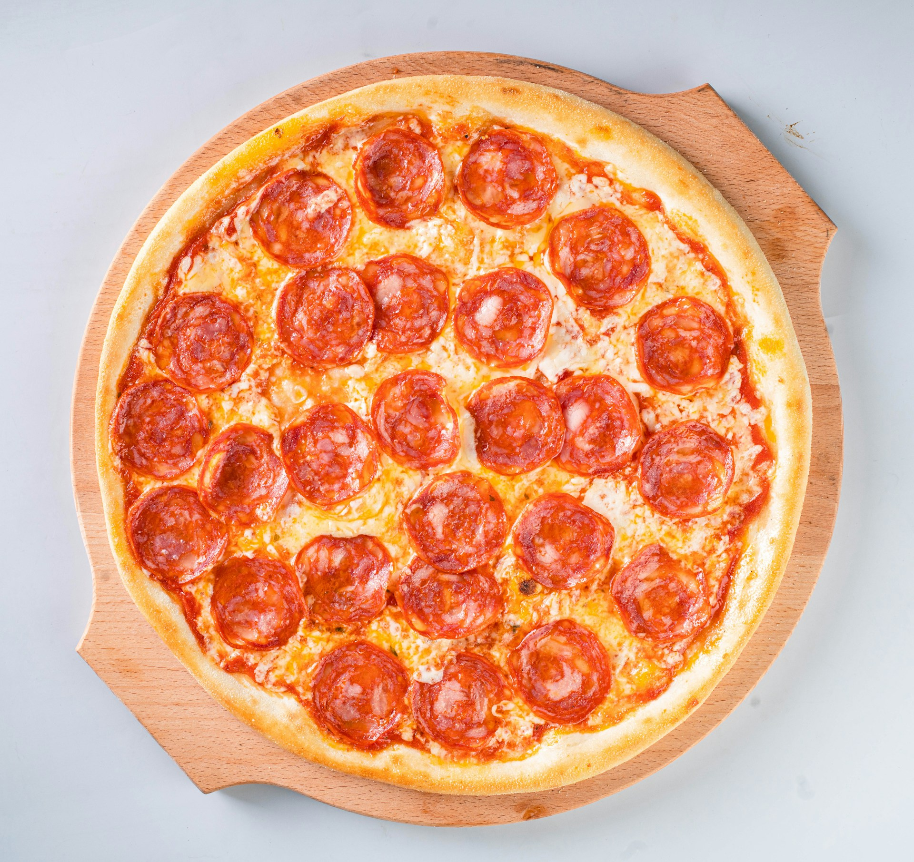

Home
Pizza Recipe

Photo by David Foodphototasty on Unsplash
Description
A simple recipe to make your own homemade pepperoni pizza. Recipe sourced from allrecipes.com.
Ingredients
Red Pizza Sauce
- 1/2 cup of water
- 6 oz of tomato paste
- 1 teaspoon of crushed dried oregano
- 1 teaspoon of crushed dried basil
- 1/2 teaspoon of garlic powder
- 1/2 teaspoon of onion powder
- 1/2 teaspoon of sugar
- 1/2 teaspoon of salt
- 1/4 teaspoon of black pepper
Pizza Crust
- 3 and 1/4 cups of flour
- 2 quarter ounce envelops of pizza crust yeast
- 1 tablespoon of sugar
- 1 and 1/2 teaspoons of salt
- 1 and 1/3 cups of warm water (120 - 140 degrees F)
- 1/3 cup of oil
Toppings
- 1 cup of shredded mozzarella cheese
- 6 ounces of pepperoni
Directions
- Preheat oven to 425 degrees F. Grease pizza pans.
- Make sauce. Whisk all sauce ingredients in a bowl until smooth.
- Make sauce. Whisk all sauce ingredients in a bowl until smooth.
- Make crust. Combine flour (2 cups), yeast, sugar, and salt in a large bowl. Add warm water and oil; mix until well blended. Add more flour little by little until dough is soft and sticky.
- Place dough on floured surface. Knead dough until smooth and elastic. Add flour as needed.
- Split dough in half. Lightly flour hands, then place each half onto pan and flatten.
- Top dough with sauce, cheese, and pepperoni
- Bake in oven until done (around 20 minutes).
- Enjoy!